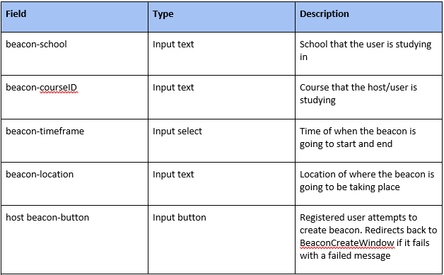
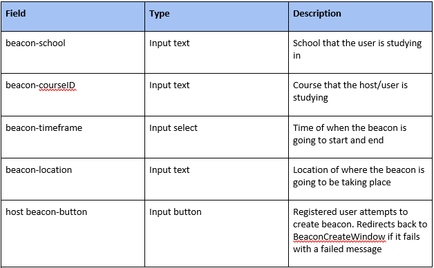

Study Space
Design Document
Version 1.5 - 08/09/2017
Introduction
Purpose
This design document describes how the requirements for the Study Space application is achieved. It goes into detail regarding software architecture, packages and module functions.
Scope
This document is constructed to guide the software developers in the creation of the product.
Definitions
BeaconDB - The table in the database which stores a list of all active beacons.
ChatDB - The table in the database which logs all chat messages in beacons and between users.
CourseDB - The table in the database which stores all the course details.
UserDB - The table in the database which stores all user credentials.
References
IEEE. IEEE Std 1016-1998 IEEE Recommended Practice for Software Design Descriptions. IEEE Computer Society, 1998
Overview
This document is written adhering to the guidelines outlined by the IEEE Recommended Practice for Software Design Descriptions.
Decomposition Description
This section shows the decomposition of the system in 3 ways:
-
Module decomposition is the breakdown of each module, the data and functions of each class is easy to change, reuse and comprehend
-
Concurrent process decomposition explains what the user is able to see on each page
-
Data decomposition explains what is used to store the persistent data.
Module Decomposition
Package Diagram
The design of Study Space separates the front end and back end. The front end is referred to as the Study Space Application and the backend is referred to as the Study Space Backend.

Study Space Application Package Diagram
The Study Space front end application is divided into application views and functions related to those views. A detailed description of all functions can be found in Section 4.0 Detailed Design.

Study Space Backend Package Diagram
The Study Space backend provides storage and some key services for the frontend.

Study Space Application Class Diagram

Study Space Database Class Diagram

Notes
- FK refers to foreign key
- The chatlogs are stored as a string in a text file containing a line for each message in the format "timeStamp: sender, msgString".
Concurrent Process Decomposition
HomeWindow
The main view for the site. It contains a map on the right side which allows for easy selection of beacon locations. It has fields for user to input school, course ID, location, date, start time, end time, and tags for filtering purposes. It contains a list of active beacons that abide by the filters set which can be joined. Finally, it shall also have a login button at the top right corner.
LoginWindow
Contains the login part on the left side and register part on the right side. The login part contains fields for Registered Users to input an email and password. The register part gives users the option to register for an account or sign in as a guest. The input fields are: Email, Confirm Email, Password, and Confirm Password.
BeaconCreationWindow
Contains the same view as HomeWindow but the list of beacons to join is gone and the input fields are shifted down to be centered relative to the map. These input fields are used to set the attributes for the Beacon that is being created. Beacon creation is finalized by clicking a “Confirm Beacon Creation” button.
ClassDiscoveryWindow
Contains a list of courses with their respective ratings, quick description and a link to the school page that describes the course.
UserDiscoveryWindow
Contains a list of Registered Users. Each registered user listed shows their profile name, the gravitar they set, and a description of themselves that they have also set.
ChatWindow
A small window at the bottom right corner of the screen that can be used to chat with others.
NavigationBar
A bar that has buttons to other tabs.
Data Decomposition
All data is be handled by a real-time server which is hosted using Firebase. Data is be validated locally, and then sent to the server in JSON format. The server then stores the data in the database in JSON format. A unique key is be generated for each piece of data pushed to the server, and this allows easy referencing of the correct JSON objects.
Interface Description
Module Interface
Home Window

LoginWindow

BeaconCreationWindow
 

ClassDiscoveryWindow

UserDiscoveryWindow

Detailed Design
Module Detailed Design
This section provides a detailed look on module design. It provides steps to produce the intended output of each module in pseudocode. This Pseudocode is useful for implementation as it provides an outline of which can be referenced when developing the product in code.
User Modules
Login
Parameters: None
Description: Logs in a GuestUser to their RegisteredUser account.
-
Call ValidateUser function.
-
If ValidateUser returns true, then log user into their Registered User Account.
-
Notify user “Username or password invalid”.
-
Return to HomeWindow
Logout
Parameters: None
Description: Logs out a RegisteredUser from their account.
-
Leave any active chats or beacons the user is currently in.
-
Log user out.
-
The user should now be a guest user.
EditProfile
Parameters: None
Description: Opens the ProfileEditWindow so user can apply changes to their RegisteredUser profile.
-
Launch the ProfileEditWindow.
SaveChanges
Parameters: String biography, String userName, String gravatar, String school
Description: Saves changes made to a RegisteredUser ProfileWindow.
-
Update the UserDB database with the changes.
-
Update the local user profile window.
-
Return to ProfileWindow.
CancelChanges
Parameters: None
Description: Cancels changes made to a RegisteredUsers ProfileWindow. (Changes are not applied)
-
Exit the ProfileEditWindow.
-
Return to ProfileWindow.
ValidateUser
Parameters: String userName, String password
Description: Validates a RegisteredUser’s credentials upon login.
-
Access UserDB to compare the stored credentials with the credentials that have been input by the user.
-
If credentials match, then return true.
-
If credentials do not match, return false.
Beacon Modules
CreateBeacon
Parameters: None
Description: Opens the BeaconCreationWindow which allows the user to set the attributes for the beacon they want to create.
-
Launch the BeaconCreationWindow
EnterInfo
Parameters: RegisteredUser host, String location, Date start, Date end.
Description: Writes RegisteredUser entered info to the Beacon.
-
User enters info.
-
Call validate beacon.
ValidateBeacon
Parameters: RegisteredUser host, String location, Date start, Date end.
Description: Validates Beacon Creation.
-
Check if location is valid.
-
Check if start date is valid.
-
Check if end date is valid.
-
Ensure that end date is after start date, and is therefore valid.
-
If all is valid, call RegisterBeacon. Then launch BeaconControlWindow.
-
If any is not valid call FailedCreation.
FailedCreation
Parameters: None
Description: Notifies the RegisteredUser controlling the Beacon of failed Beacon creation.
-
Notify user that beacon creation failed.
-
Return to BeaconCreationWindow.
RegisterBeacon
Parameters: Beacon beacon
Description: Registers Beacon to BeaconList.
-
Add the beacon to the BeaconList.
CloseBeacon
Parameters: String userName
Description: Allows UserBeacon to be closed by the RegisteredUser who is hosting the Beacon.
-
Remove the Beacon from BeaconList.
-
Close the BeaconControlWindow.
-
Open the BeaconCreationWindow.
RelocateBeacon
Parameters: String userName, String location
Description: Allows RegisteredUser controlling the beacon to relocate their Beacon.
-
Use the key to identify the Beacon.
-
Update the location attribute of the respective beacon in BeaconDB.
-
Update BeaconControlWindow location value.
ExtendBeacon
Parameters: String userName, String date
Description: Allows RegisteredUser controlling the Beacon to extend the time of their Beacon.
-
Use the key to identify the Beacon in BeaconDB.
-
Extend the date to the date specified.
JoinBeacon
Parameters: String userName
Description: Joins a GuestUser or RegisteredUser to a Beacon
-
Use the key to identify the Beacon in BeaconDB.
-
If Beacon is found (if it still exists)
-
Add user to the Beacon’s members list.
-
Launch BeaconJoinedWindow.
-
If Beacon is not found (it does not exist anymore)
-
Launch BeaconFailedJoinWindow.
LeaveBeacon
Parameters: String userName
Description: Removes a GuestUser or RegisteredUser from a Beacon they are in.
-
Use the key to identify the beacon in BeaconDB.
-
Remove userName from the beacon’s member list.
-
Return to HomeWindow.
NotifyUser
Parameters: String userName
Description: Notifies GuestUser or RegisteredUser of an invitation to a Beacon.
-
Use userName as a key to identify the beacon in BeaconDB.
-
Notify the user of an invite to the Beacon.
-
User can accept or decline.
ApplySearchFilters
Parameters: String course, String location
Description: Applies Filters to be used while searching BeaconDB.
-
Generate a temporary filtered list from BeaconDB based on filters the user has input. Templist is a list of userName Strings used as keys to identify beacons which follow the filter requirements.
-
Call DisplayResults
DisplayResults
Parameters: None
Description: Displays results of a search.
-
Pull list of beacons from Beaconlist.
-
Use information pulled from BeaconList to display results on HomeWindow.
-
Show HomeWindow.
BackToSearch
Parameters: None
Description: Redirects GuestUser or RegisteredUser back to SearchWindow after a failed search.
-
Launch message for failed search.
-
Launch search window.
Chat
SendMsg
Description: Sends a message to a chat.
-
Generate a message object with proper msgString, timeStamp, and sender.
-
Adjust chatLog, and update the chat.
-
Use the chatID to identify the correct chat in ChatDB and append the new message to the chat.
Documentation
Angular Angular is an open-source front-end platform used to build web applications. It is maintained by Google, and was developed with the goal of minimizing size and maximizing performance of web applications. It is TypeScript based, meaning applications developed in angular can be coded in JavaScript. Angular has been chosen for the implementation of Study Space because it is robust and excels in the development of data-driven applications. It provides libraries that makes difficult operations such as data binding much easier. It allows for plenty of code reuse, and applications developed with Angular can be viewed on multiple platforms. Finally, Angular is well documented and easy to learn; There are plenty of resources online that can be accessed, including Tutorials on the Angular website.
Material Design Lite Material Design Lite is a CSS framework that allows attractive front end design for webpages. It was created by Google, and allows a unified user experience across many platforms. Material Design Lite is useful for styling the Study Space web application with a modern look and feel, as well as the implementation of self-evident features.
Google Maps Api The Google Maps API is a service which allows developers to integrate Google Maps into their websites and applications. This API was chosen to implement the map for Study Space because Google is the leading innovator in web mapping technology, and it is a service that all users of the application is familiar with. The Google Maps API also provides a plethora of documentation which makes learning to work with it much easier.
Node.js Node.js is an open source, cross-platform javascript runtime environment for executing javascript code server-side. Node.js is particularly useful because the same language can be used on the front end and back end of development, which makes development much less trivial in general. It is event driven while also supporting asynchronous I/O which suits the needs of the Study Space application nicely.
Firebase Firebase is a mobile and web application development platform owned and maintained by Google. All data in Firebase databases is stored as JSON objects. For Study Space, Firebase is used to provide a realtime database to store information on user credentials, chat logs, active beacons, and more. Overall, it is a very functional platform that allows the Study Space team to be productive during the implementation of the project.
Versions
Version 1.1 - 07/13/2017
Document outline created
Adjusted document based on SQA suggestions
- - Calvin Wang
- - Mitch Marino
- - Virack Chhom
- - Ethyl Chan
- - Amandeep Gogia
Thanks to SQA by
- - Jake Loftus
- - Matthew Younatan
- - Garrett Parris
Version 1.2 - 07/17/2017
Updated and bugfixed
Adjusted document based on SQA suggestions
Thanks to SQA by
Version 1.3 - 07/22/2017
HTML and Images/Charts added
Adjusted document based on SQA suggestions
Thanks to SQA by
- - Jake Loftus
- - Onkar Deol
Version 1.4 - 08/08/2017
Adjusted document based on SQA suggestions
Thanks to SQA by
- - Jake Loftus
- - Orchid Ami
Version 1.5 - 08/09/2017
Adjusted document based on my SQA suggestions